チュートリアル一覧に戻る : Oracle Cloud Infrastructure チュートリアル
仮想テスト・アクセス・ポイント（Virtual Test Access Points, VTAP）を設定すると、コンピュート・インスタンスやロードバランサ―、DBシステムなどのコンポーネントへ流れ込むトラフィックをミラーリングし、リアルタイムでターゲットへ送信することができます。そのトラフィックをフォレンジック分析に用いたり、ネットワークのトラブルシューティングやテストに役立てたりでき、セキュリティの完全性（Integrity）やネットワークの管理性を向上させることができます。
本チュートリアルでは、①サーバにパケットを送信するクライアント、②パケットを受信するサーバ、③VTAPでミラーリングされたパケットを受信するターゲット（ネットワーク・ロードバランサーのバックエンド・インスタンスとして配置する）の役割を持つ3台のコンピュート・インスタンスを構築します。①から②へ流れるICMPパケットやTELNETパケットをVTAPでミラーリングして③に流し、そのパケットをパケットキャプチャツールであるtcpdumpとWiresharkを用いて観察していきます（下図）。
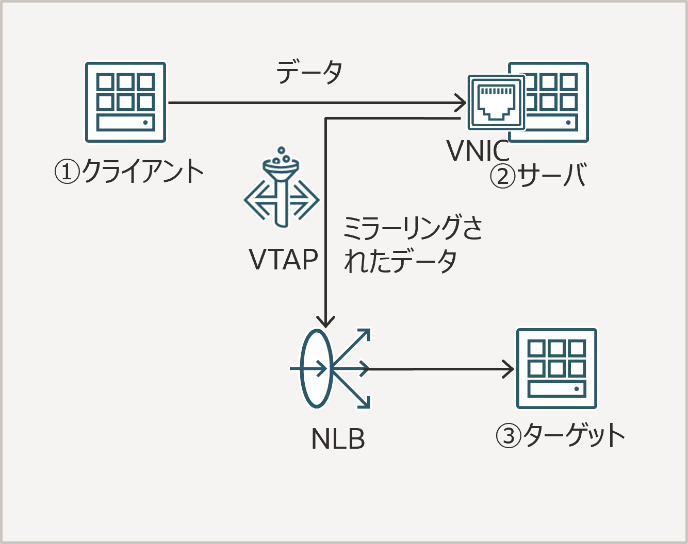
このチュートリアルを通して、クライアント・インスタンスを一つのパブリック・サブネットに、サーバ・インスタンスとターゲット・インスタンス、ネットワーク・ロード・バランサ―（NLB）を一つのプライベート・サブネットに配置した構成を構築していきます（下図）。 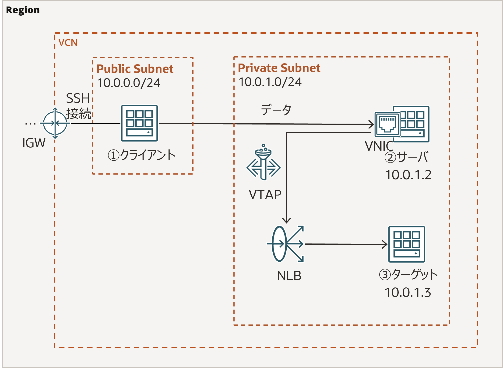
所要時間 : 約100分
前提条件 :
- チュートリアル入門編（その2）- クラウドに仮想ネットワーク(VCN)を作るを通じてVCNの作成が完了しており、そのVCN内にデフォルトのプライベート・サブネットとパブリック・サブネットが作成されていること
- チュートリアル入門編（その3）- インスタンスを作成するを通じてコンピュート・インスタンスの作成が完了していること
注意 : チュートリアル内の画面ショットについては、現在のコンソール画面と異なっている場合があります
目次 :
- クライアント・インスタンスとサーバー・インスタンスの作成、pingコマンドによる疎通確認
- ターゲットNLBとバックエンド・インスタンスの作成
- VTAPの設定とICMPパケットのキャプチャ
- Wiresharkを用いたTELNETパケットのキャプチャ
1. クライアント・インスタンスとサーバー・インスタンスの作成、pingコマンドによる疎通確認
この章ではパケットキャプチャの下準備として、クライアント・インスタンスでサーバ・インスタンスに向けてpingコマンドを実行し、ICMPパケットを送信してみます。なお、セキュリティを考慮して、サーバ・インスタンスをプライベート・サブネット内に配置した構成にします（下図） 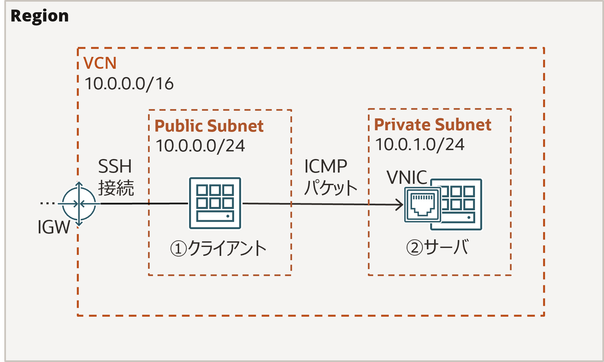
本チュートリアルの前提条件を完遂すると、プライベート・サブネットと、少なくとも一台のインスタンスが配置されているパブリック・サブネットがVCNに配置されます（下図）。今回、パブリック・サブネットに配置されているインスタンスをそのままクライアント・インスタンスとして用います。 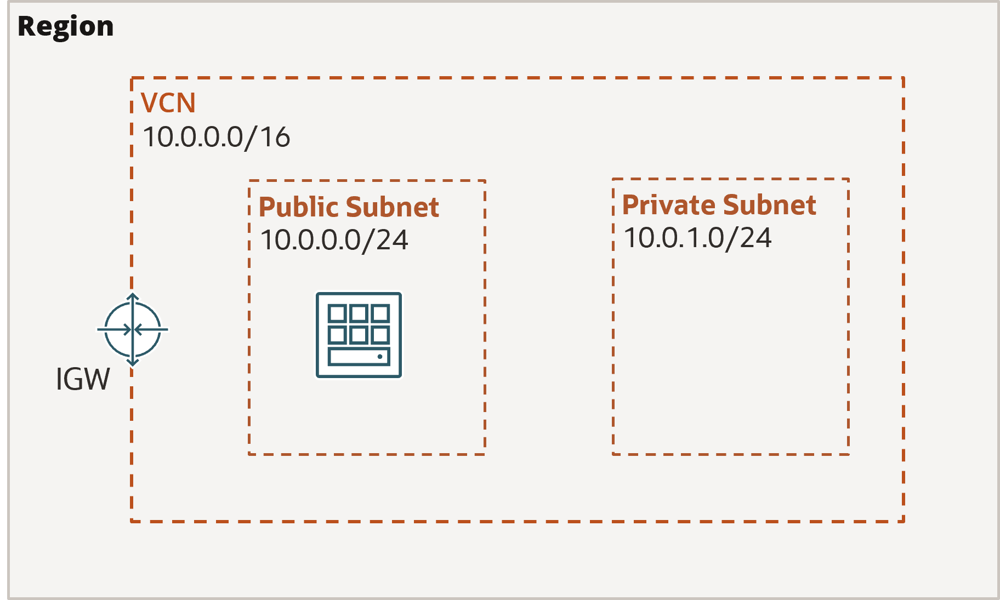
-
コンソールメニューから、
コンピュートを選択し、インスタンスの項目を選択します。コンパートメント内のインスタンス一覧が表示されるので、一覧の中からクライアント・インスタンスのパブリックIPアドレスを探してメモします（図ではモザイク処理をしています） 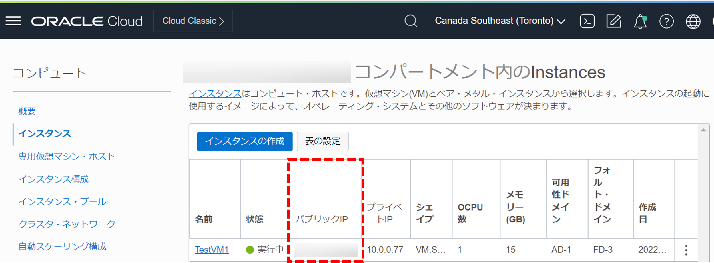 -
プライベート・サブネットにサーバ・インスタンスを作成するため、
インスタンスの作成ボタンをクリックします（前項の図中、青色のボタン）。 - 表示された
コンピュート・インスタンスの作成ウィンドウに以下の項目を入力し、作成ボタンをクリックします（下図）。特にインスタンスをプライベート・サブネットに作成することに注意してください名前- server-VMコンパートメントに作成- VCNやクライアント・インスタンスが存在するコンパートメントを選択（以後、検証用コンパートメントと呼びます）可用性ドメイン- 任意イメージとシェイプ- VMstandard2.1とOracle Linux7.9を選択ネットワーキングプライマリ・ネットワーク-既存の仮想クラウド・ネットワークを選択[コンパートメント名] の仮想クラウド・ネットワーク- 『チュートリアル入門編（その2）- クラウドに仮想ネットワーク(VCN)を作る』で作成した仮想クラウド・ネットワークを選択 （図ではTutorialVCNという名前のものを選択しています。以後、この名前を説明文に用いますが、お使いのコンパートメントでこれに相当するVCN名に読み替えてください）サブネット-既存のサブネットを選択がデフォルトで、プライベート・サブネットを選択（図ではプライベート・サブネット-TutorialVCNという名前）パブリックIPアドレス-パブリックIPv4アドレスを割り当てないでくださいが選択されていることを確認拡張オプションの表示をクリックし、詳細を表示しますネットワーク・セキュリティ・グループを使用してトラフィックを制御- チェック無しプライベートIPアドレス- 10.0.1.2DNSレコード- プライベートDNSレコードを割り当てないホスト名- 空欄のまま起動オプション-Oracle Cloud Infrastructureに最適なネットワーク・タイプを選択させますを選択
SSHキーの追加-公開キー・ファイル(.pub)のアップロードからクライアント・インスタンスに登録した公開鍵と同じものを参照してアップロードブート・ボリュームの作成カスタム・ブート・ボリューム・サイズを指定します- チェック無し転送中暗号化の使用- チェック無し自分が管理するキーでこのボリュームを暗号化- チェック無し
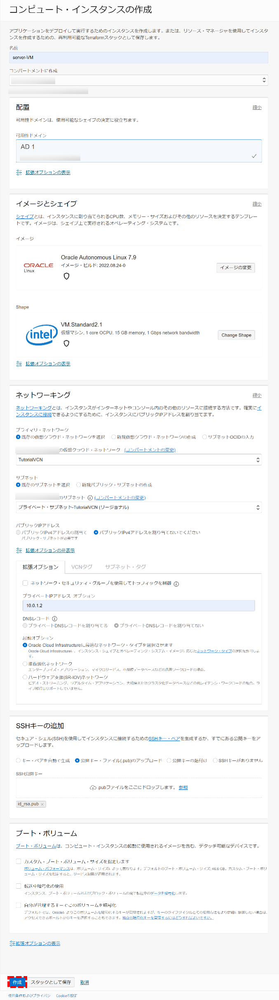
-
コンソールメニュー →
ネットワーキング→仮想クラウド・ネットワークを選択し、一覧からTutorialVCNのリンクをクリックします -
サブネット一覧からプライベート・サブネットを選択します
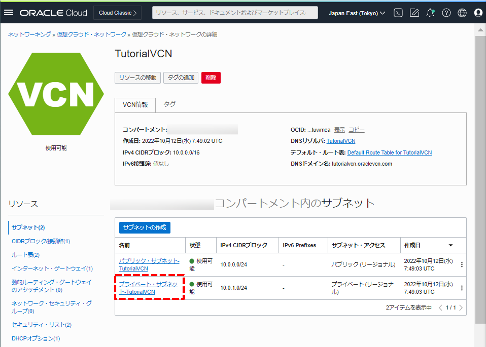
-
表示されるセキュリティ・リストの一覧からプライベート・サブネットのセキュリティ・リストを選択します
-
表示されるイングレス・ルールは、デフォルトのままであれば、VCN内からはTCP（宛先が22番ポート）とICMPのタイプ3、外部からはICMPのタイプ3（コード4）の通信のみを許可しています（下図）
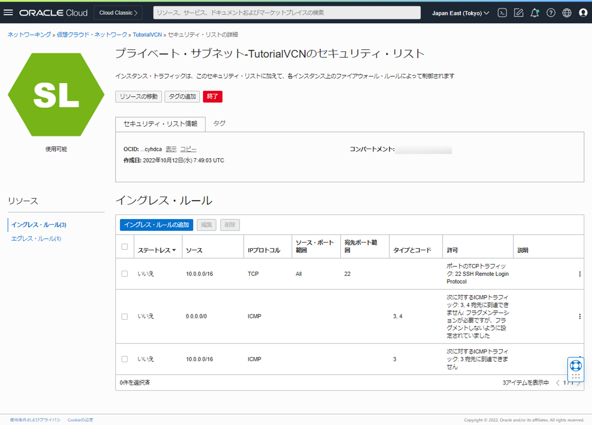
-
pingコマンドでの疎通確認は、ICMPのタイプ8（エコー要求）のパケットが送り先まで届き、それを受けて送り先からタイプ0（エコー応答）のパケットが返されることでなされます。サーバ・インスタンスでこれらの通信を許可するためにプライベート・サブネットのセキュリティ・リストにイングレス・ルールを追加していきます。
イングレスルールの追加ボタンをクリックしてください（前項の図、青色のボタン） イングレス・ルールの追加の画面が表示されるので以下の項目を入力し、イングレス・ルールの追加ボタンをクリックして下さい（下図）ステートレス- チェックなしソースタイプ- CIDRソースCIDR- 10.0.0.0/24IPプロトコル- ICMPタイプ- 8コード・オプション- 空欄のまま説明- 任意
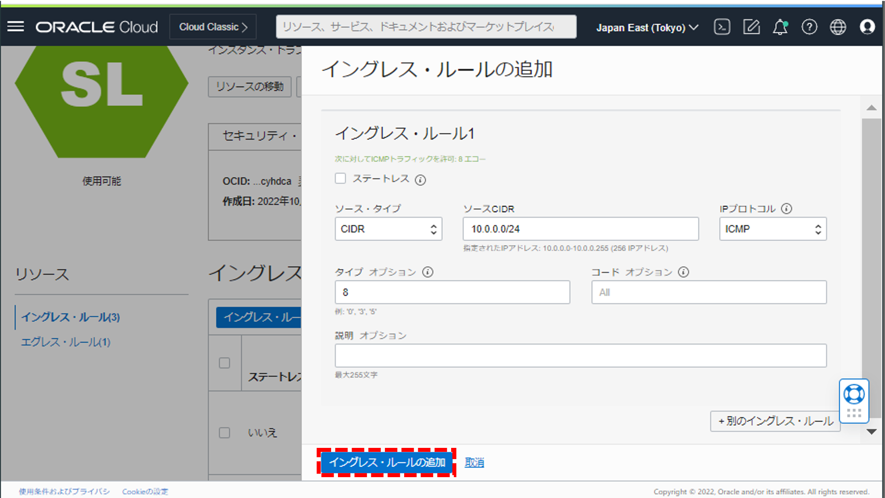
Note
このルールは一見、ICMPのタイプ8の通信のみを許可するように見えますが、ステートフルな通信を許可することでタイプ0の応答を返すことができるようになっています。そのため、一つ目の項目であるステートレスのチェックボックスのチェックが外れていることを必ず確認してください。
- 以下のコマンドでサーバ・インスタンスにSSH接続します
ssh -i [秘密鍵へのパス] -o ProxyCommand="ssh -i [秘密鍵へのパス] opc@[クライアント・インスタンスのパブリックIPアドレス] -W %h:%p" opc@10.0.1.2 - 続けて、次のコマンドでOSのファイヤーウォールを停止します
sudo systemctl stop firewalld - 新しく端末を開き、次のコマンドでクライアント・インスタンスにSSH接続します
ssh -i [秘密鍵へのパス] opc@[クライアント・インスタンスのパブリックIPアドレス] - クライアント・インスタンスに接続している端末で、次のコマンドを実行し、疎通確認を行います（サーバ・インスタンスに向けて約300 byteのICMPパケットを5回送信するコマンドです）
ping -c 5 -s 300 10.0.1.2エラーにならずにパケットが5回送信され、「5 packets transmitted, 5 received, 0% packet loss」というメッセージが表示されたら成功です（下図）。
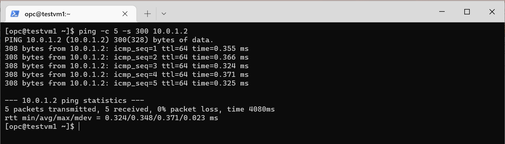
2. ターゲットNLBとバックエンド・インスタンスの作成
VTAPによりミラーリングされたトラフィックは、まずNLBに流され、次にNLBのバックエンド・セットとして配置されたインスタンス（ターゲット・インスタンス）に流されます。VTAPを設定する前にNLBとターゲット・インスタンスの設定を行っていきます。
-
はじめに、セキュリティ・ルールの変更を行います。前章を参考に、プライベート・サブネットのセキュリティ・リストの項目を開き、
イングレス・ルールの追加ボタンをクリックします - 表示されるフォームの項目を次のように入力して
イングレス・ルールの追加ボタンをクリックします（下図）ステートレス- チェックなしソースタイプ- CIDRソースCIDR- 10.0.1.0/24IPプロトコル- UDPソース・ポート範囲- All（デフォルトのまま記入しない）宛先ポート範囲- 4789説明- 任意
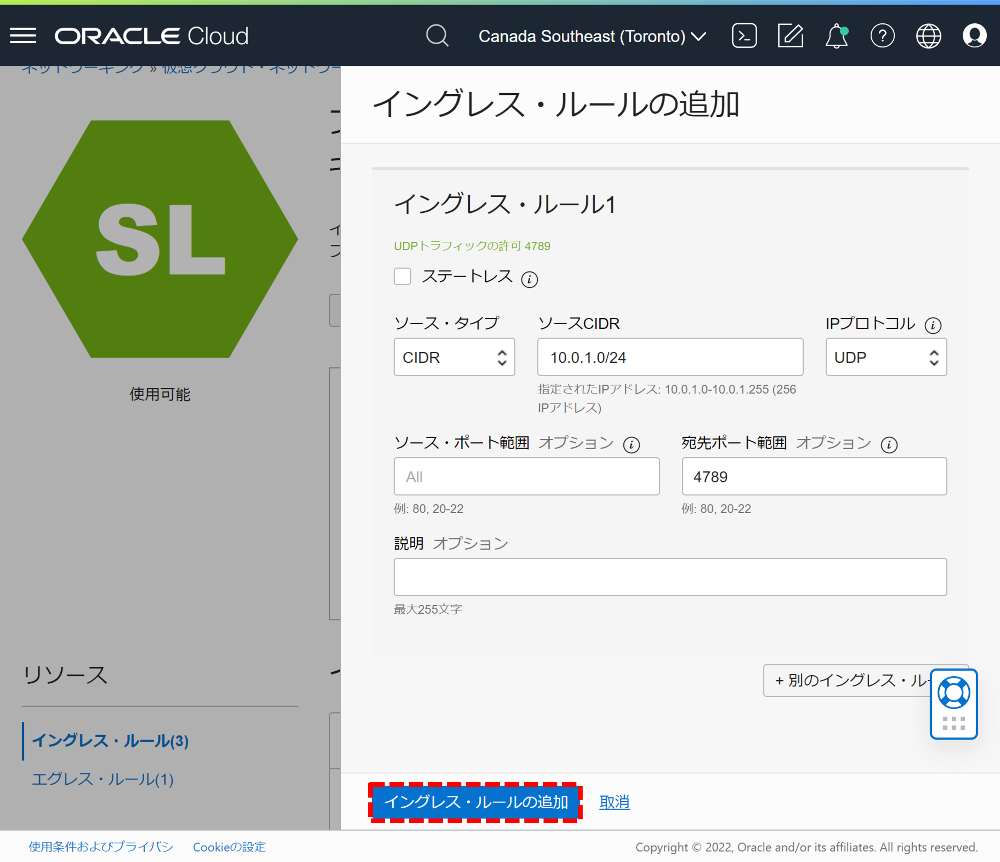
-
続けてイングレス・ルールをもう一つ追加します。宛先ポート番号を49152にし、他の項目は先ほど追加したルールと同じにします（下図）
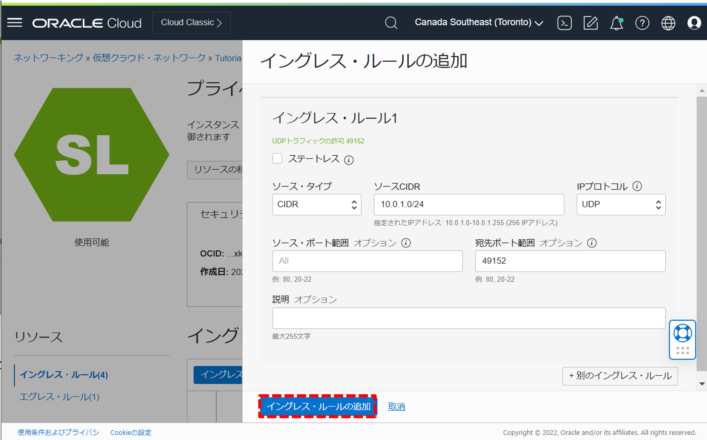
- 前章を参考に、プライベート・サブネットにターゲット・インスタンスを作成します。ただし、インスタンスの名前とプライベートIPアドレスは以下のように設定してください。また、公開鍵はクライアント・インスタンスと同じものをアップロードしてください。ここまででクライアント・インスタンスがパブリック・サブネットに、サーバ・インスタンスとターゲット・インスタンスがプライベート・サブネットにそれぞれ配置された構成が完成します（下図）
- 名前 - target-VM
- プライベートIPアドレス - 10.0.1.3
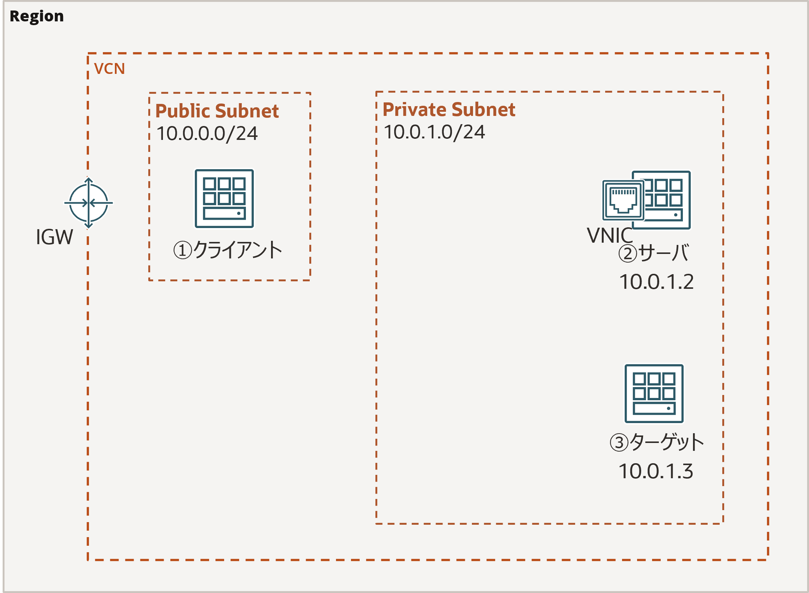
- 次のコマンドで、ターゲット・インスタンスにSSH接続します
ssh -i [秘密鍵へのパス] -o ProxyCommand="ssh -i [秘密鍵へのパス] opc@[クライアント・インスタンスのパブリック・IPアドレス] -W %h:%p" opc@10.0.1.3 -
後に設定するNLBは、バックエンド・セット（本チュートリアルではターゲット・インスタンス）のヘルスチェックをUDPで、宛先ポート49152番にて行うことにします。ターゲット・インスタンスに送信されるヘルスチェックのリクエストを受け入れ、レスポンスを返すため、ここではncatコマンドを用います。まずは以下のコマンドでnmap-ncatパッケージをインストールします
sudo yum -y install nmap-ncat.x86_64 - 次のコマンドでバージョンが返されればインストールは成功です
nc -v - 続けて、OSのファイヤーウォールを停止します
sudo systemctl stop firewalld - 次のコマンドでUDPサーバを建て、NLBのヘルスチェックのリクエストを待機します
while true; do (echo "response") | nc -lu 49152 -i 1; done > /dev/null 2>&1 & -
コンソールメニューから、
ネットワーキング→ロード・バランサを選択すると、ロード・バランサ・タイプの選択フォームが表示されます。ネットワーク・ロード・バランサを選択して、ロード・バランサの作成ボタンをクリックします（下図） 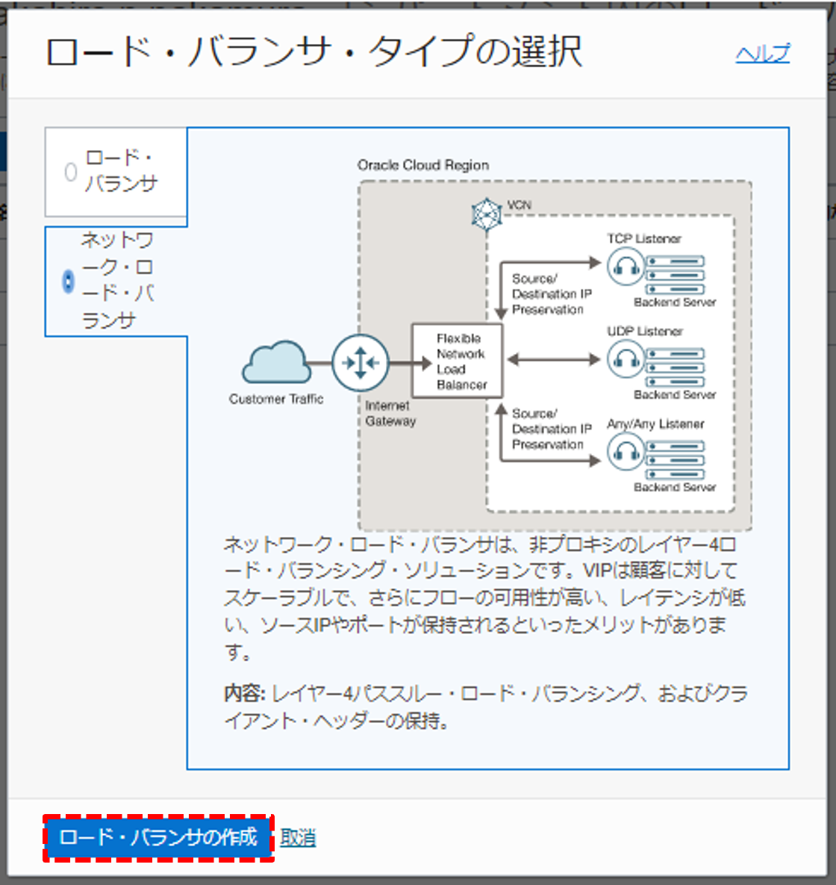 ネットワーク・ロード・バランサの作成画面にて、詳細の追加で以下の項目を入力し、次ボタンをクリックします（下図）ロード・バランサ名- NLB可視性タイプの選択- プライベートIPv6アドレス割り当ての許可- チェックなしのままネットワーキングの選択〔コンパートメント名〕の仮想クラウド・ネットワーク- TutorialVCN〔コンパートメント名〕のサブネット- VCN内のプライベート・サブネットネットワーク・セキュリティ・グループを使用してトラフィックを制御します- チェックなしのまま
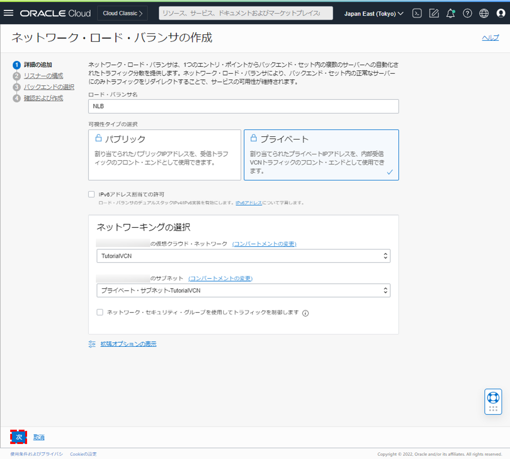
リスナーの構成で以下の項目を入力し、次ボタンをクリックします（下図）リスナー名- NLB-listenerリスナーで処理するトラフィックタイプの指定- UDPイングレス・トラフィック・ポート- 4789
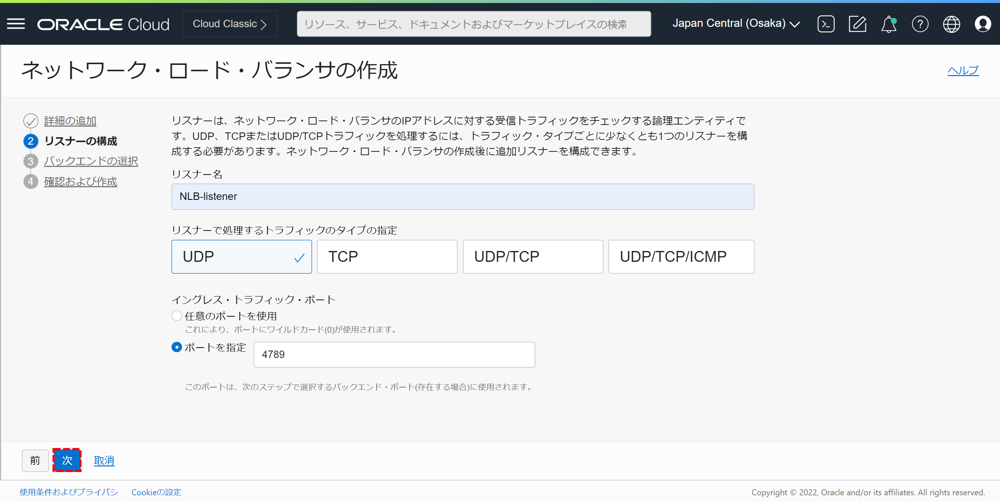
バックエンドの選択で以下の項目を入力し、次ボタンをクリックします（下図２枚目）バックエンド・セット名- backendsetソース/宛先ヘッダー(IP、ポート)の保持(ネットワーク・ロード・バランサ)- チェックを入れるバックエンドの追加ボタンをクリックして、表示されるフォームに以下の項目を入力し、フォーム左下、バックエンドの追加ボタンをクリックします（下図１枚目）インスタンス- target-VMポート番号- 49152重み- 1 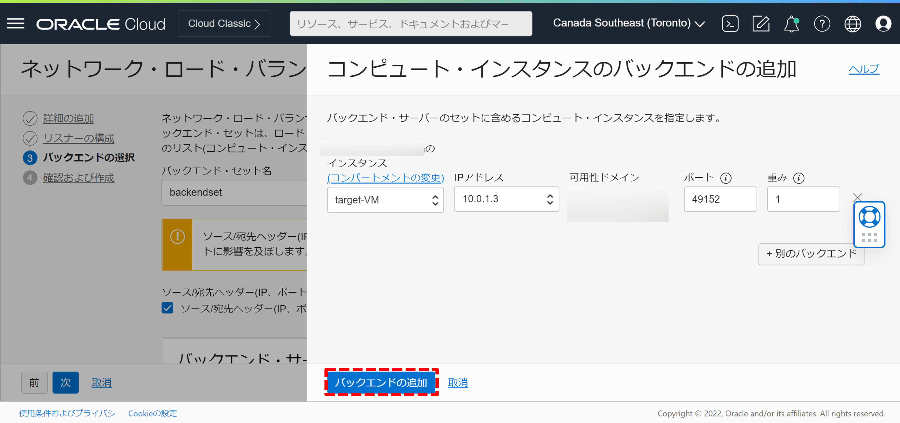
ヘルス・チェック・ポリシーの指定プロトコル- UDPポート- バックエンド・ポートを使用のまま間隔ミリ秒- デフォルトのままタイムアウト（ミリ秒）- デフォルトのまま再試行回数- デフォルトのままリクエスト・データ- requestレスポンス・データ- response
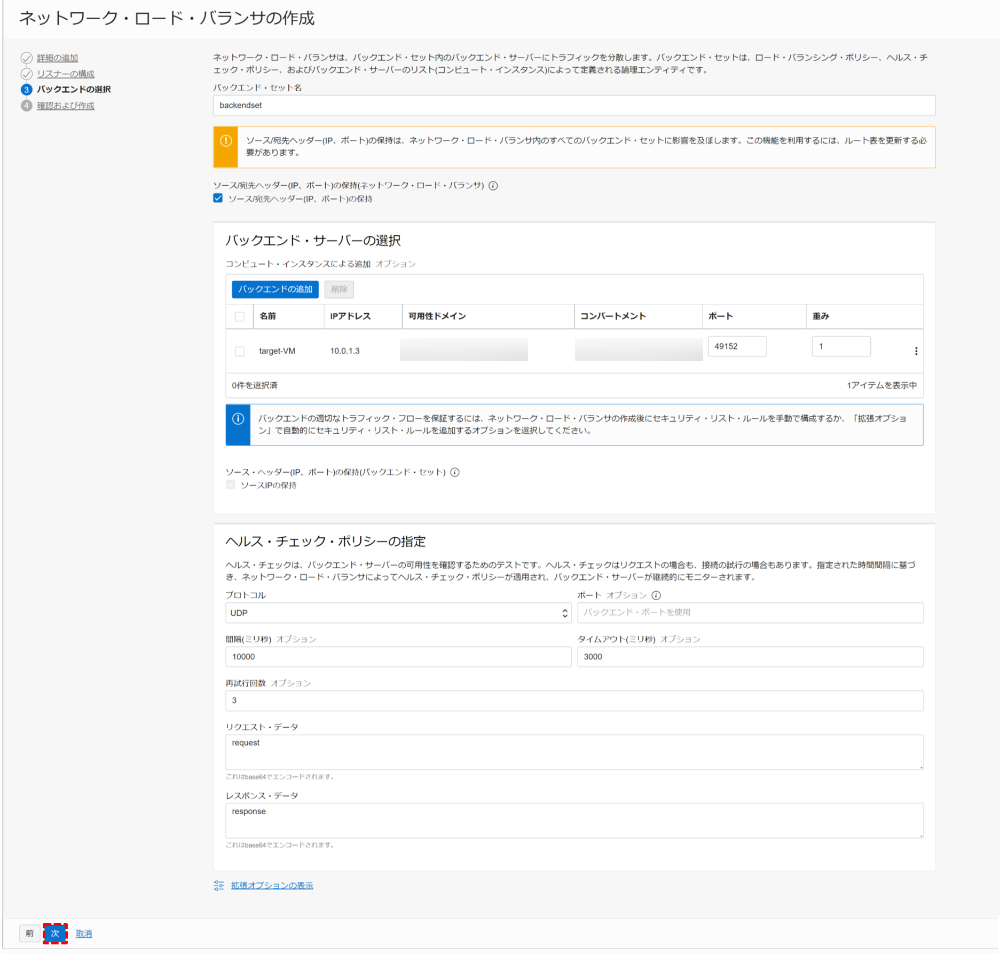
-
入力項目を確認して、ロード・バランサを作成ボタンをクリックします（下図）
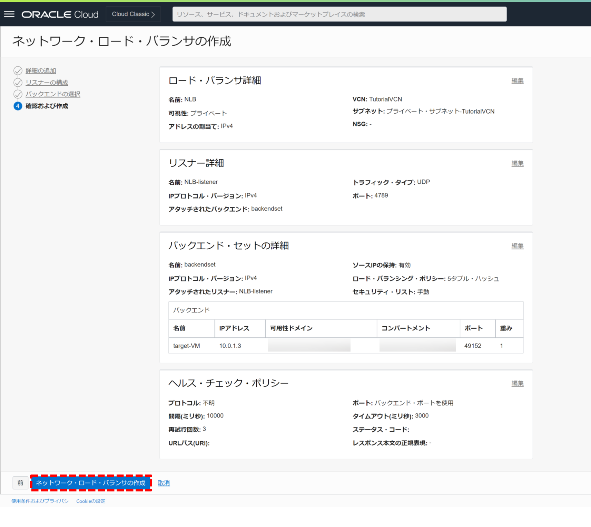
- ロード・バランサの詳細画面で、
全体的なヘルスが「OK」になれば設定は成功です（下図） 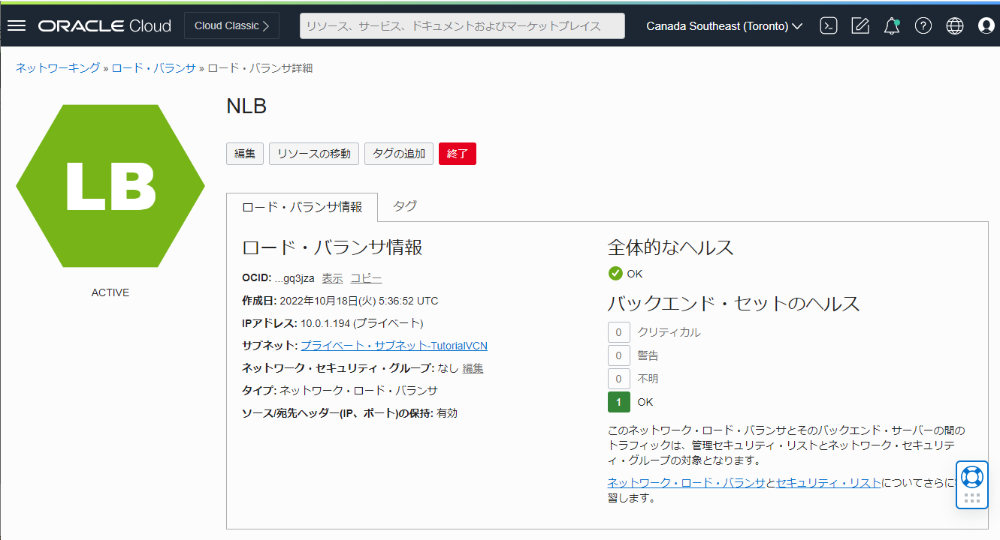
ここまでで、プライベート・サブネット内でNLBとターゲット・インスタンスが接続された構成が完成しました（下図）。 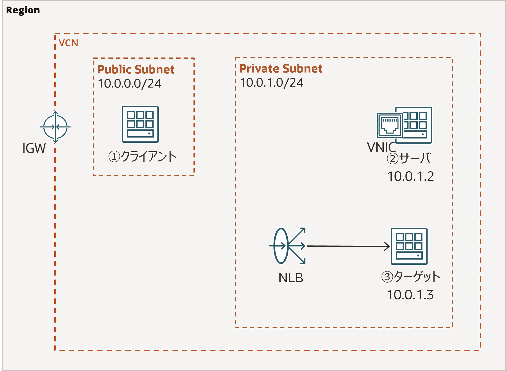
3. VTAPの設定とICMPパケットのキャプチャ
この章では、いよいよVTAPを作成してサーバ・インスタンスへのトラフィックをターゲット・インスタンスで観察します。まずは、サーバ・インスタンスへのトラフィックをミラーリングしてターゲットNLBへ流すようにVTAPを設定します。その後、ミラーリングするトラフィックをICMPに絞り込むため、VTAPに紐づく取得フィルタも設定していきます（下図） 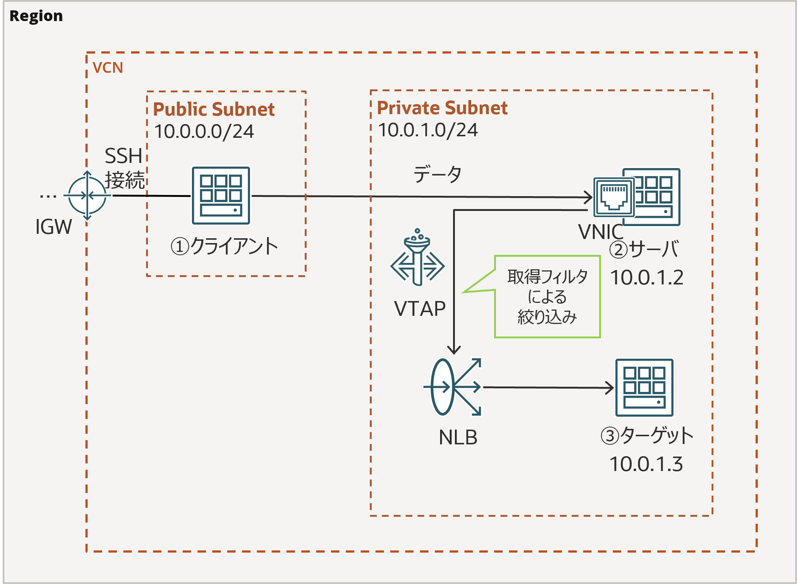
-
コンソールメニューから、
ネットワーキング→ネットワーク・コマンド・センター→VTAPを選択します 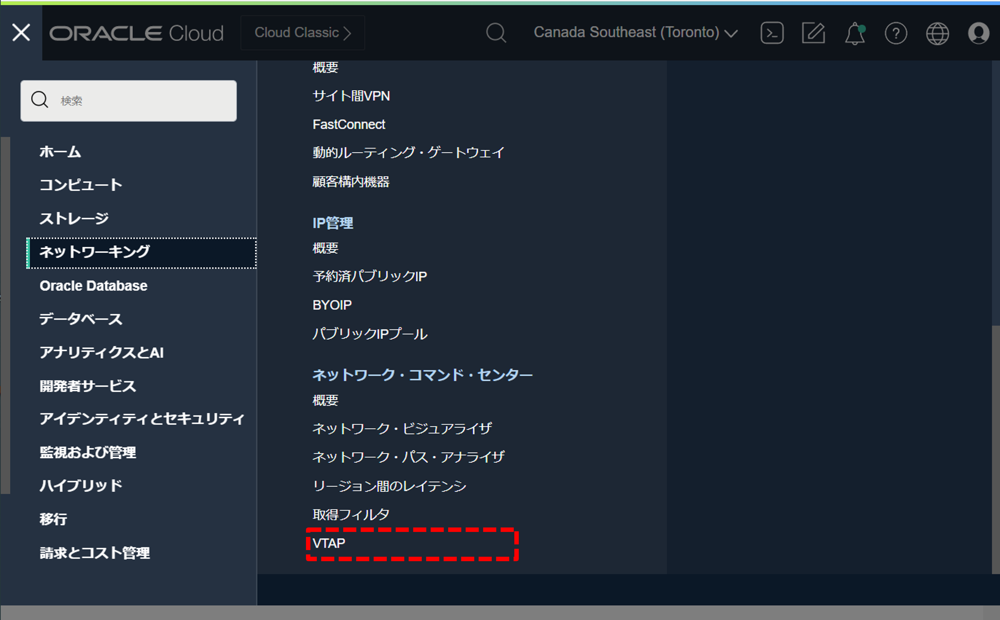 -
表示されるVTAPの一覧画面左上、
VTAPの作成ボタンをクリックします 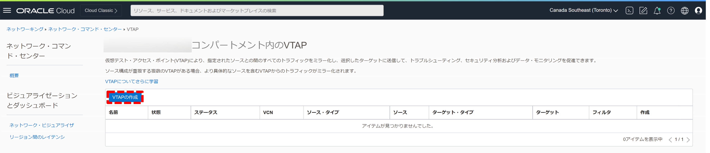 - 以下のように項目を入力し、
VTAPの作成ボタンをクリックします（下図２枚目）名前- ICMP-filterコンパートメントに作成- 検証用コンパートメント[コンパートメント名のVCN]- TutorialVCNソースソースタイプ- インスタンスVNIC[コンパートメント名]のサブネット- プライベート・サブネット[コンパートメント名]のインスタンスのVNIC- サーバー・インスタンスのVNICを選択
ターゲットリソース・タイプ- ネットワーク・ロード・バランサ[コンパートメント名]のサブネット- プライベート・サブネット[コンパートメント名]のネットワーク・ロード・バランサ- 先ほど作成したNLBを選択
取得フィルタ-
[コンパートメント名]の取得フィルタ- 新規取得フィルタの作成をクリックし（下図１枚目）、開いた画面で以下の項目が入力できたら取得フィルタの作成ボタンをクリックします名前- ICMP-filterコンパートメントに作成- 検証用コンパートメントルール順序番号1トラフィックの方向- イングレス包含/除外- 含めるソースのIPv4 CIDRまたはIPv6接頭辞- 10.0.0.0/24宛先のIPv4 CIDRまたはIPv6接頭辞- 10.0.1.0/24IPプロトコル- ICMP
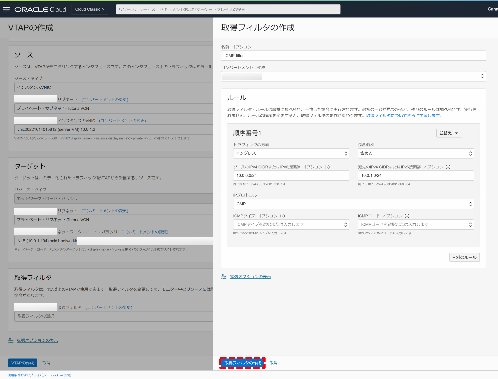
-
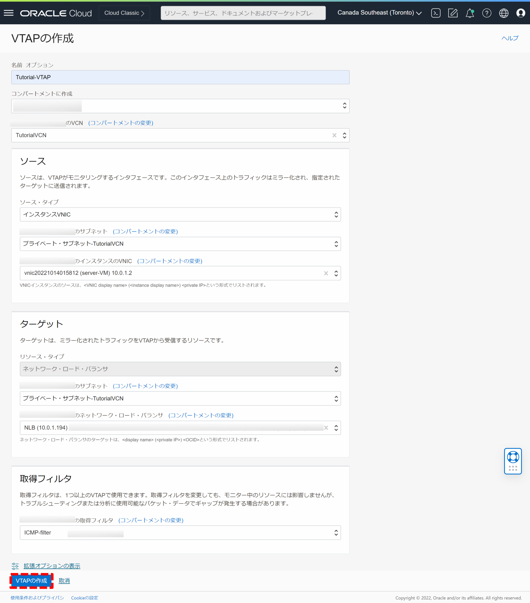
-
遷移先のVTAPの詳細画面で起動ボタンをクリックし、表示される確認画面でも起動を選択します（下図） 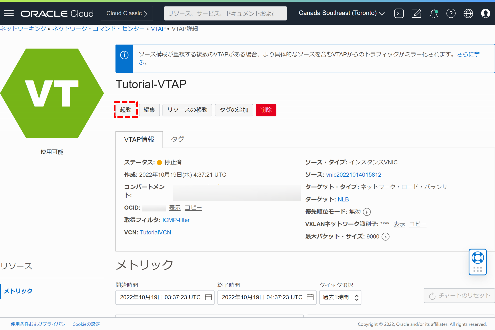
-
ステータスが実行中になったことを確認します（下図） 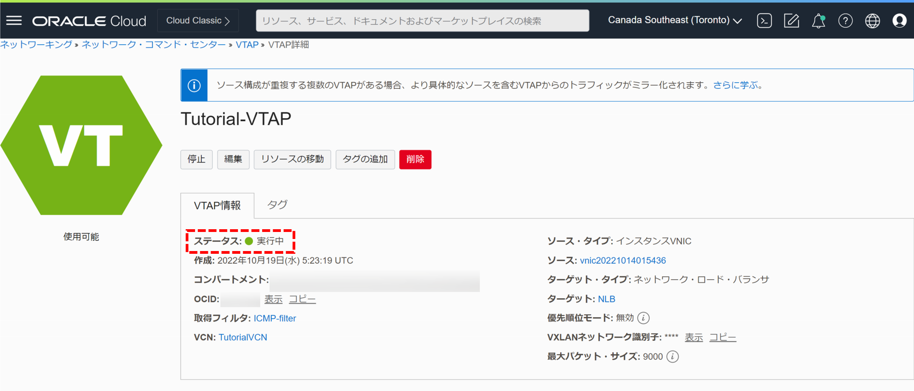
-
ターゲット・インスタンス側でVTAPでミラーリングされるパケットを受け取る準備をします。ターゲット・インスタンスの詳細画面から
リソース→アタッチされたVNICを選択します。アタッチされているVNICで表示右側の →
→ VNICの編集をクリックします（下図） 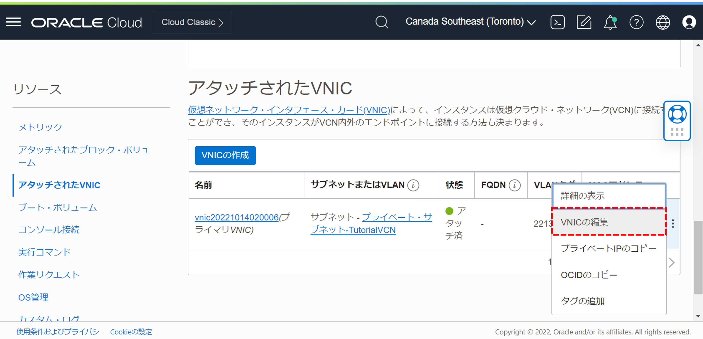 -
表示されるVNICの編集画面で、
ソース/宛先チェックのスキップにチェックを入れ、変更の保存ボタンをクリックします（下図） 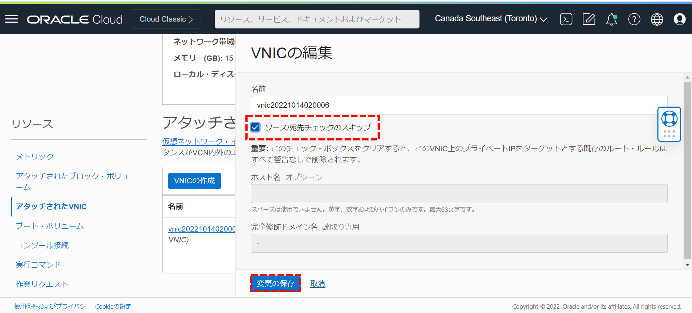 -
クライアント・インスタンスに接続している端末と、ターゲット・インスタンスに接続している端末を並べます。ターゲット・インスタンスで次のコマンドを実行して、VTAPにより、サーバ・インスタンスからミラーリングされて流れてくるパケットを待ち受けます
sudo tcpdump src host 10.0.1.2 -vv -i ens3 -
クライアント・インスタンスで次のpingコマンドを実行して、ICMPパケットをサーバ・インスタンスへ送信します。クライアント・インスタンスからの送信に連動して、ターゲット・インスタンスに接続している端末がパケットの情報を出力すれば成功です（下図）
ping -c 5 -s 300 10.0.1.2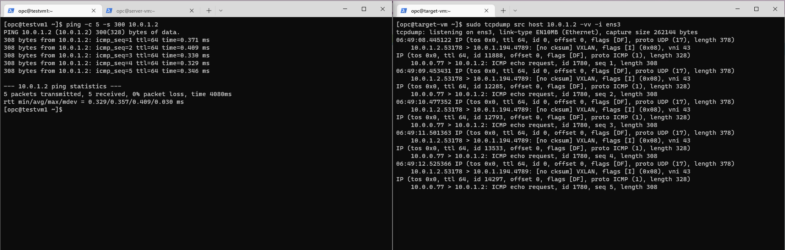
4. Wiresharkを用いたTELNETパケットのキャプチャ
ここまで、クライアントからホストへの接続にはSSHを用いてきました。SSHでは、クライアントとホストを繋ぐSSHコネクションの通信が暗号化されるため、その間の通信が傍受されても通信内容を読み取られることを防止できます。遠隔ログインのプロトコルとしてSSHの他にTELNETがあります。TELNETでは通信が暗号化されないため実運用では情報漏洩の危険を伴いますが、この章では練習としてTELNETとWiresharkを用いることでクライアント・インスタンスからサーバ・インスタンスへ送信される平文の通信内容を観察してみたいと思います。
-
はじめに、VTAPのルールを編集して、TELNET通信を観察する準備をします。 コンソールメニューから、
ネットワーキング→ネットワーク・コマンド・センター→取得フィルタを選択します（下図）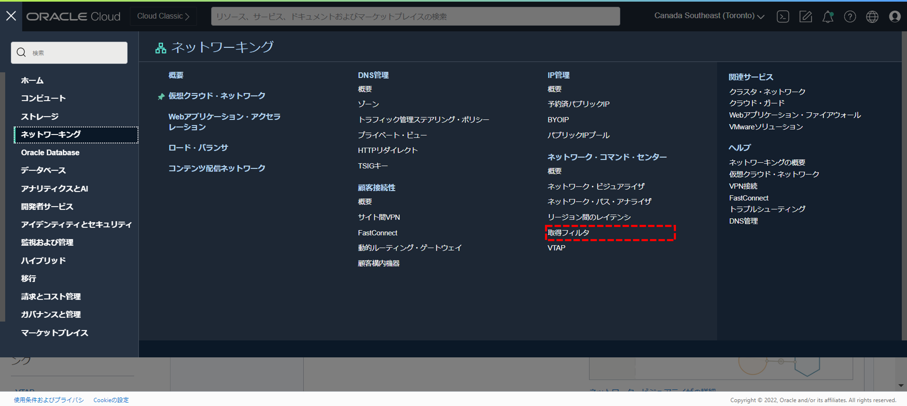
-
先ほど作成したICMP-filterのリンクをクリックして詳細画面を表示し、
リソース→ルールを選択します。ルールの一覧が表示されるので、左上、ルールの管理ボタンをクリックします（下図）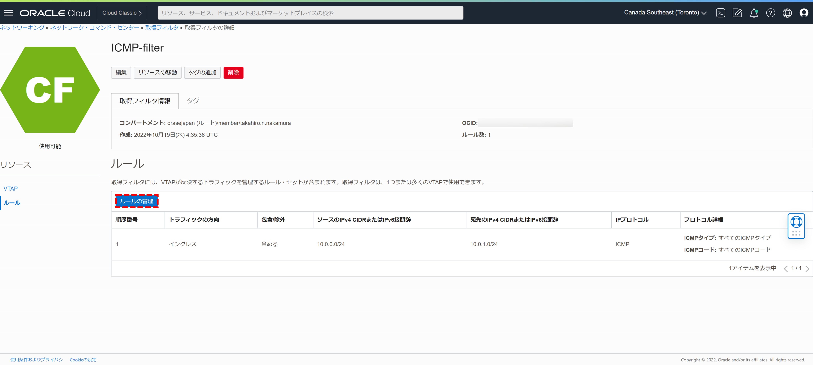
-
＋別のルールをクリックして、順序番号2のフォームを表示します（下図）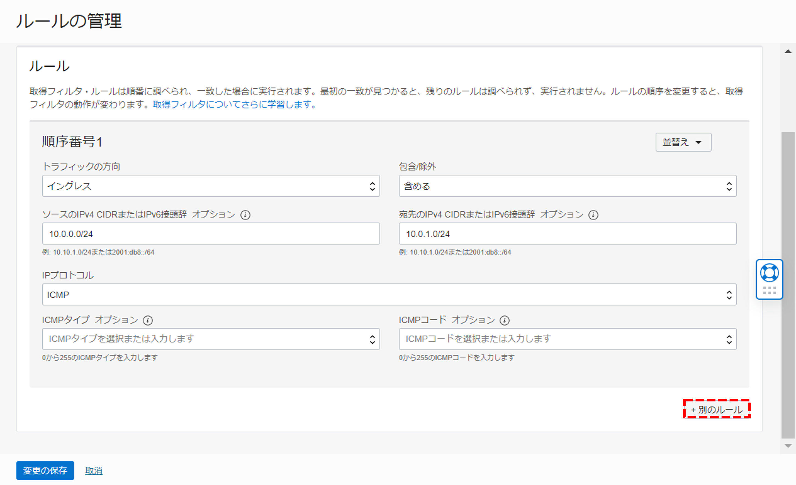
- 以下のように項目を入力して、
変更の保存ボタンをクリックします（下図）順序番号2トラフィックの方向- イングレス包含/除外- 含めるソースのIPv4 CIDRまたはIPv6接頭辞- 10.0.0.0/24宛先のIPv4 CIDRまたはIPv6接頭辞- 10.0.1.0/24IPプロトコル- TCP宛先ポート範囲- 23-23
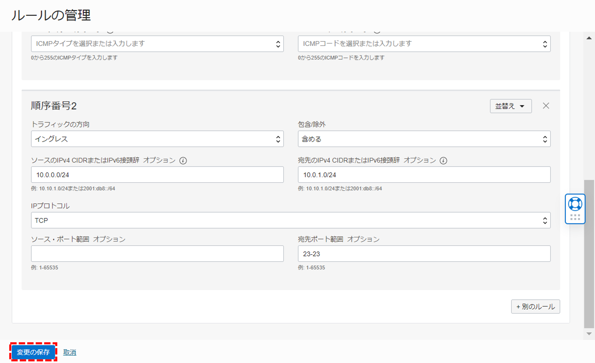
-
コンソールメニュー →
ネットワーキング→仮想クラウド・ネットワーク→TutorialVCN→セキュリティリストから、プライベート・サブネットのセキュリティ・ルール一覧画面を開きます。TELNET接続を許可するため、イングレス・ルールの追加ボタンをクリックします イングレス・ルールの追加画面で、以下のように項目を設定し、イングレス・ルールの追加ボタンをクリックしてください（下図）ソース・タイプ- CIDRソースCIDR- 10.0.0.0/24IPプロトコル- TCPソースポート範囲- All（何も記入しない）宛先ポート範囲- 23説明- 任意
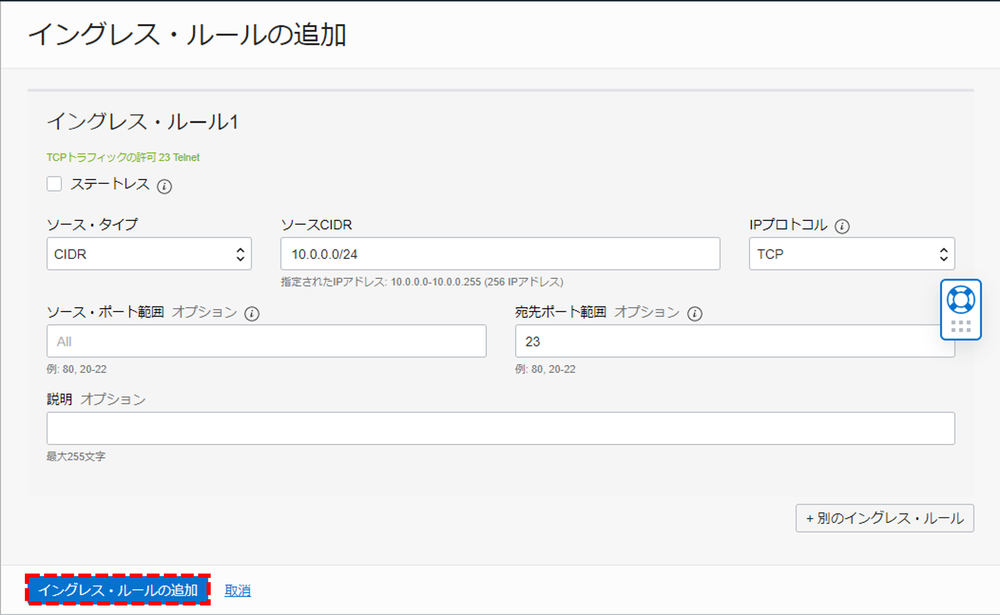
- クライアント・インスタンスに接続している端末で次のコマンドを実行し、telnetコマンドをインストールします
sudo yum -y install telnet - サーバ・インスタンスに接続している端末で次のコマンドを実行し、Telnetサーバをインストールした後、起動します
sudo yum -y install telnet-serversudo systemctl start telnet.socket -
続いて、サーバ・インスタンスのopcユーザーに認証用のパスワードを設定します。次のコマンドを実行した後、パスワードを求められるので、W3lcome123##と入力して設定してください
sudo passwd opc - ターゲット・インスタンスに接続している端末で次のコマンドを実行し、Wiresharkをインストールします
sudo yum -y install wireshark - 続けて、次のコマンドを実行し、インターフェース番号を表示します。表示された情報からens3に対応する番号を探してメモします（下図では4番）
sudo tshark -D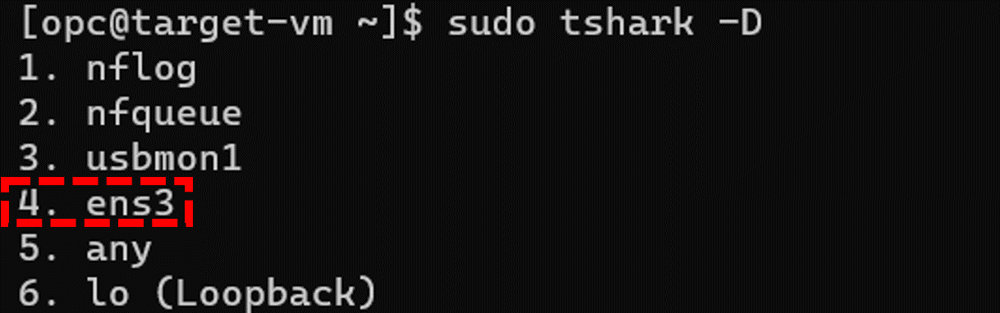
- 続けて、次のコマンドでVTAPでミラーリングされて流されてくるパケットを待ち構えます
sudo tshark -Y 'ip.src==10.0.1.2 and udp.dstport==4789' -T fields -e ip.src -e ip.dst -e telnet.data -d udp.port==4789,vxlan -i [インターフェースの番号] - クライアント・インスタンスから、サーバ・インスタンスへのTELNET接続を試みます。次のコマンドをクライアント・インスタンスに接続している端末から実行すると、ユーザー名とパスワードが求められるので以下のように入力します。入力に連動して、ターゲット・インスタンスに接続している端末でパケットに含まれる文字列が出力されます（下図）
telnet 10.0.1.2- server-vm login - opc
- password - W3lcome123##
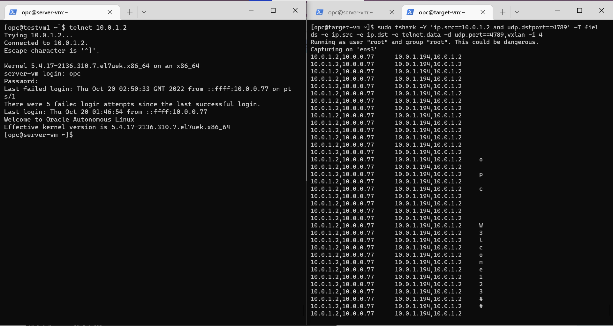
本チュートリアルではVTAPを用いてインスタンスVNICに送信されるパケットをミラーリングし、その内容を観察しました。2022年11月現在、VTAPではこの他にDBシステム、Exadata VMクラスタ、ロード・バランサ、Autonomous Datawarehouseに流れるパケットをミラーリングすることができます。要件に応じてVTAPをお役立てください。以上で本チュートリアルは終了です。
チュートリアル一覧に戻る : Oracle Cloud Infrastructure チュートリアル